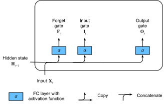
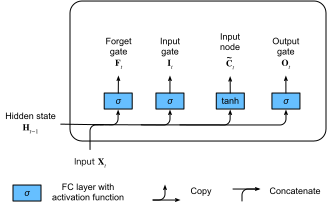
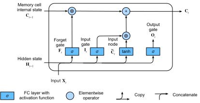
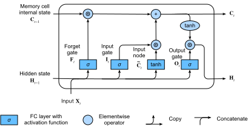

10.1. 长短期记忆网络（LSTM）¶
在第一批 Elman 风格的 RNN 使用反向传播训练之后不久 (Elman, 1990)， 学习长期依赖的问题（由梯度消失和梯度爆炸引起）就变得突出起来， Bengio 和 Hochreiter 讨论了这一问题 (Bengio et al., 1994, Hochreiter et al., 2001)。 Hochreiter 早在 1991 年的硕士论文中就已经阐明了这个问题， 但由于论文是用德语写的，这些结果并没有广为人知。 虽然梯度裁剪有助于处理梯度爆炸， 但处理梯度消失似乎需要更精细的解决方案。 最早且最成功的解决梯度消失问题的技术之一， 是由 Hochreiter and Schmidhuber (1997) 提出的 长短期记忆网络（LSTM）模型。 LSTM 类似标准的循环神经网络， 但在这里每个普通的循环节点都被替换为一个记忆单元（memory cell）。 每个记忆单元包含一个内部状态（internal state）， 即一个具有固定权重为 1 的自连接循环边的节点， 这确保了梯度可以跨过许多时间步而不会消失或爆炸。
“长短期记忆”这个术语来自以下直觉。 简单的循环神经网络以权重的形式拥有长期记忆。 权重在训练过程中变化缓慢，编码了关于数据的一般知识。 它们也以短暂的激活值形式拥有短期记忆， 这些激活值从每个节点传递到后续节点。 LSTM 模型通过记忆单元引入了一种中间类型的存储。 记忆单元是一个复合单元， 由更简单的节点按特定的连接模式构建而成， 并创新性地加入了乘法节点。
import torch
from torch import nn
from d2l import torch as d2l
from mxnet import np, npx
from mxnet.gluon import rnn
from d2l import mxnet as d2l
npx.set_np()
import jax
from flax import linen as nn
from jax import numpy as jnp
from d2l import jax as d2l
import tensorflow as tf
from d2l import tensorflow as d2l
10.1.1. 门控记忆单元¶
每个记忆单元都配备一个内部状态和若干个乘法门， 这些门决定：(i) 给定的输入是否应影响内部状态（输入门（input gate））； (ii) 内部状态是否应被清空为 \(0\)（遗忘门（forget gate））； 以及 (iii) 是否允许给定神经元的内部状态影响单元的输出（输出门（output gate））。
10.1.1.1. 隐藏状态的门控¶
普通 RNN 与 LSTM 的关键区别在于， 后者支持对隐藏状态进行门控。 这意味着我们有专门的机制来决定隐藏状态何时应该被更新， 以及何时应该被重置。 这些机制是可学习的，它们解决了上面列出的问题。 例如，如果第一个词元非常重要， 我们就会学到在第一次观测之后不再更新隐藏状态。 同样，我们会学到跳过无关的临时观测。 最后，我们会学到在需要时重置潜在状态。 下面我们详细讨论这一点。
10.1.1.2. 输入门、遗忘门和输出门¶
输入到 LSTM 门的数据是当前时间步的输入 和上一时间步的隐藏状态，如 图10.1.1 所示。 三个带 sigmoid 激活函数的全连接层 分别计算输入门、遗忘门和输出门的值。 由于使用了 sigmoid 激活， 三个门的所有值都落在 \((0, 1)\) 区间内。 此外，我们还需要一个输入节点（input node）， 它通常用 tanh 激活函数计算。 直观地说，输入门决定输入节点的值有多少 应被加到当前记忆单元的内部状态中。 遗忘门决定是保留记忆的当前值还是将其清空。 而输出门决定记忆单元是否应在当前时间步影响输出。

图10.1.1 LSTM 模型中输入门、遗忘门和输出门的计算。¶
在数学上，假设有 \(h\) 个隐藏单元， 批量大小为 \(n\)，输入数为 \(d\)。 于是，输入为 \(\mathbf{X}_t \in \mathbb{R}^{n \times d}\)， 上一时间步的隐藏状态为 \(\mathbf{H}_{t-1} \in \mathbb{R}^{n \times h}\)。 相应地，时间步 \(t\) 的门定义如下： 输入门为 \(\mathbf{I}_t \in \mathbb{R}^{n \times h}\)， 遗忘门为 \(\mathbf{F}_t \in \mathbb{R}^{n \times h}\)， 输出门为 \(\mathbf{O}_t \in \mathbb{R}^{n \times h}\)。 它们的计算方式如下：
其中 \(\mathbf{W}_{\textrm{xi}}, \mathbf{W}_{\textrm{xf}}, \mathbf{W}_{\textrm{xo}} \in \mathbb{R}^{d \times h}\) 和 \(\mathbf{W}_{\textrm{hi}}, \mathbf{W}_{\textrm{hf}}, \mathbf{W}_{\textrm{ho}} \in \mathbb{R}^{h \times h}\) 是权重参数， \(\mathbf{b}_\textrm{i}, \mathbf{b}_\textrm{f}, \mathbf{b}_\textrm{o} \in \mathbb{R}^{1 \times h}\) 是偏置参数。 请注意，在求和过程中会触发广播 （参见 2.1.4节）。 我们使用 sigmoid 函数（如 5.1节 中所介绍） 把输入值映射到区间 \((0, 1)\)。
10.1.1.3. 输入节点¶
接下来我们设计记忆单元。 由于我们还没有指定各个门的作用， 我们首先引入输入节点（input node） \(\tilde{\mathbf{C}}_t \in \mathbb{R}^{n \times h}\)。 它的计算与上面描述的三个门类似， 但使用值域为 \((-1, 1)\) 的 \(\tanh\) 函数作为激活函数。 这就得到了时间步 \(t\) 的以下公式：
其中 \(\mathbf{W}_{\textrm{xc}} \in \mathbb{R}^{d \times h}\) 和 \(\mathbf{W}_{\textrm{hc}} \in \mathbb{R}^{h \times h}\) 是权重参数， \(\mathbf{b}_\textrm{c} \in \mathbb{R}^{1 \times h}\) 是偏置参数。
输入节点的简要图示见 图10.1.2。

图10.1.2 LSTM 模型中输入节点的计算。¶
10.1.1.4. 记忆单元的内部状态¶
在 LSTM 中，输入门 \(\mathbf{I}_t\) 通过 \(\tilde{\mathbf{C}}_t\) 控制我们考虑多少新数据， 而遗忘门 \(\mathbf{F}_t\) 则决定我们保留多少 旧的单元内部状态 \(\mathbf{C}_{t-1} \in \mathbb{R}^{n \times h}\)。 利用哈达玛（按元素）乘积运算符 \(\odot\)， 我们得到以下更新公式：
如果遗忘门始终为 1、输入门始终为 0， 那么记忆单元的内部状态 \(\mathbf{C}_{t-1}\) 将永远保持不变， 原封不动地传递到每个后续时间步。 然而，输入门和遗忘门使模型能够灵活地学习： 何时保持该值不变，何时响应后续输入而扰动它。 在实践中，这种设计缓解了梯度消失问题， 使得模型更容易训练， 尤其是在面对序列长度较长的数据集时。
于是我们得到 图10.1.3 中的流程图。

图10.1.3 LSTM 模型中记忆单元内部状态的计算。¶
10.1.1.5. 隐藏状态¶
最后，我们需要定义如何计算记忆单元的输出， 即其他层所看到的隐藏状态 \(\mathbf{H}_t \in \mathbb{R}^{n \times h}\)。 这正是输出门发挥作用的地方。 在 LSTM 中，我们先对记忆单元的内部状态应用 \(\tanh\)， 然后再进行一次按元素乘法，这次是与输出门相乘。 这确保了 \(\mathbf{H}_t\) 的值始终位于 \((-1, 1)\) 区间内：
当输出门接近 1 时， 我们允许记忆单元的内部状态不受阻碍地影响后续层； 而当输出门值接近 0 时， 我们阻止当前记忆在当前时间步影响网络的其他层。 请注意，记忆单元可以在不影响网络其余部分的情况下 （只要输出门取值接近 0）跨许多时间步累积信息， 然后在后续时间步，一旦输出门从接近 0 的值变为接近 1 的值， 就突然影响网络。 图10.1.4 给出了数据流的图形化说明。

图10.1.4 LSTM 模型中隐藏状态的计算。¶
10.1.2. 从零开始实现¶
现在让我们从零开始实现一个 LSTM。 与 9.5节 中的实验一样， 我们首先加载The Time Machine数据集。
10.1.2.1. 初始化模型参数¶
接下来，我们需要定义并初始化模型参数。 与之前一样，超参数
num_hiddens 决定隐藏单元的数量。 我们按照标准差为 0.01
的高斯分布初始化权重， 并将偏置设为 0。
class LSTMScratch(d2l.Module):
def __init__(self, num_inputs, num_hiddens, sigma=0.01):
super().__init__()
self.save_hyperparameters()
init_weight = lambda *shape: nn.Parameter(torch.randn(*shape) * sigma)
triple = lambda: (init_weight(num_inputs, num_hiddens),
init_weight(num_hiddens, num_hiddens),
nn.Parameter(torch.zeros(num_hiddens)))
self.W_xi, self.W_hi, self.b_i = triple() # Input gate
self.W_xf, self.W_hf, self.b_f = triple() # Forget gate
self.W_xo, self.W_ho, self.b_o = triple() # Output gate
self.W_xc, self.W_hc, self.b_c = triple() # Input node
实际的模型正是按上面描述定义的， 由三个门和一个输入节点组成。 请注意，只有隐藏状态会被传递到输出层。
@d2l.add_to_class(LSTMScratch)
def forward(self, inputs, H_C=None):
if H_C is None:
# Initial state with shape: (batch_size, num_hiddens)
H = torch.zeros((inputs.shape[1], self.num_hiddens),
device=inputs.device)
C = torch.zeros((inputs.shape[1], self.num_hiddens),
device=inputs.device)
else:
H, C = H_C
outputs = []
for X in inputs:
I = torch.sigmoid(torch.matmul(X, self.W_xi) +
torch.matmul(H, self.W_hi) + self.b_i)
F = torch.sigmoid(torch.matmul(X, self.W_xf) +
torch.matmul(H, self.W_hf) + self.b_f)
O = torch.sigmoid(torch.matmul(X, self.W_xo) +
torch.matmul(H, self.W_ho) + self.b_o)
C_tilde = torch.tanh(torch.matmul(X, self.W_xc) +
torch.matmul(H, self.W_hc) + self.b_c)
C = F * C + I * C_tilde
H = O * torch.tanh(C)
outputs.append(H)
return outputs, (H, C)
class LSTMScratch(d2l.Module):
def __init__(self, num_inputs, num_hiddens, sigma=0.01):
super().__init__()
self.save_hyperparameters()
init_weight = lambda *shape: np.random.randn(*shape) * sigma
triple = lambda: (init_weight(num_inputs, num_hiddens),
init_weight(num_hiddens, num_hiddens),
np.zeros(num_hiddens))
self.W_xi, self.W_hi, self.b_i = triple() # Input gate
self.W_xf, self.W_hf, self.b_f = triple() # Forget gate
self.W_xo, self.W_ho, self.b_o = triple() # Output gate
self.W_xc, self.W_hc, self.b_c = triple() # Input node
实际的模型正是按上面描述定义的， 由三个门和一个输入节点组成。 请注意，只有隐藏状态会被传递到输出层。
@d2l.add_to_class(LSTMScratch)
def forward(self, inputs, H_C=None):
if H_C is None:
# Initial state with shape: (batch_size, num_hiddens)
H = np.zeros((inputs.shape[1], self.num_hiddens),
ctx=inputs.ctx)
C = np.zeros((inputs.shape[1], self.num_hiddens),
ctx=inputs.ctx)
else:
H, C = H_C
outputs = []
for X in inputs:
I = npx.sigmoid(np.dot(X, self.W_xi) +
np.dot(H, self.W_hi) + self.b_i)
F = npx.sigmoid(np.dot(X, self.W_xf) +
np.dot(H, self.W_hf) + self.b_f)
O = npx.sigmoid(np.dot(X, self.W_xo) +
np.dot(H, self.W_ho) + self.b_o)
C_tilde = np.tanh(np.dot(X, self.W_xc) +
np.dot(H, self.W_hc) + self.b_c)
C = F * C + I * C_tilde
H = O * np.tanh(C)
outputs.append(H)
return outputs, (H, C)
class LSTMScratch(d2l.Module):
num_inputs: int
num_hiddens: int
sigma: float = 0.01
def setup(self):
init_weight = lambda name, shape: self.param(name,
nn.initializers.normal(self.sigma),
shape)
triple = lambda name : (
init_weight(f'W_x{name}', (self.num_inputs, self.num_hiddens)),
init_weight(f'W_h{name}', (self.num_hiddens, self.num_hiddens)),
self.param(f'b_{name}', nn.initializers.zeros, (self.num_hiddens)))
self.W_xi, self.W_hi, self.b_i = triple('i') # Input gate
self.W_xf, self.W_hf, self.b_f = triple('f') # Forget gate
self.W_xo, self.W_ho, self.b_o = triple('o') # Output gate
self.W_xc, self.W_hc, self.b_c = triple('c') # Input node
实际的模型正是按上面描述定义的， 由三个门和一个输入节点组成。
请注意，只有隐藏状态会被传递到输出层。 在 forward 方法中使用很长的
for 循环， 会导致首次运行时 JIT 编译时间极长。 作为解决方案，JAX 提供了
jax.lax.scan 工具变换， 来替代用 for
循环在每个时间步更新状态的做法，从而实现相同的行为。 它接收一个称为
carry 的初始状态 和一个 inputs 数组，并沿后者的首轴进行扫描。
scan 变换最终会按预期返回最终状态和堆叠的输出。
@d2l.add_to_class(LSTMScratch)
def forward(self, inputs, H_C=None):
# Use lax.scan primitive instead of looping over the
# inputs, since scan saves time in jit compilation.
def scan_fn(carry, X):
H, C = carry
I = jax.nn.sigmoid(jnp.matmul(X, self.W_xi) + (
jnp.matmul(H, self.W_hi)) + self.b_i)
F = jax.nn.sigmoid(jnp.matmul(X, self.W_xf) +
jnp.matmul(H, self.W_hf) + self.b_f)
O = jax.nn.sigmoid(jnp.matmul(X, self.W_xo) +
jnp.matmul(H, self.W_ho) + self.b_o)
C_tilde = jnp.tanh(jnp.matmul(X, self.W_xc) +
jnp.matmul(H, self.W_hc) + self.b_c)
C = F * C + I * C_tilde
H = O * jnp.tanh(C)
return (H, C), H # return carry, y
if H_C is None:
batch_size = inputs.shape[1]
carry = jnp.zeros((batch_size, self.num_hiddens)), \
jnp.zeros((batch_size, self.num_hiddens))
else:
carry = H_C
# scan takes the scan_fn, initial carry state, xs with leading axis to be scanned
carry, outputs = jax.lax.scan(scan_fn, carry, inputs)
return outputs, carry
class LSTMScratch(d2l.Module):
def __init__(self, num_inputs, num_hiddens, sigma=0.01):
super().__init__()
self.save_hyperparameters()
init_weight = lambda *shape: tf.Variable(tf.random.normal(shape) * sigma)
triple = lambda: (init_weight(num_inputs, num_hiddens),
init_weight(num_hiddens, num_hiddens),
tf.Variable(tf.zeros(num_hiddens)))
self.W_xi, self.W_hi, self.b_i = triple() # Input gate
self.W_xf, self.W_hf, self.b_f = triple() # Forget gate
self.W_xo, self.W_ho, self.b_o = triple() # Output gate
self.W_xc, self.W_hc, self.b_c = triple() # Input node
实际的模型正是按上面描述定义的， 由三个门和一个输入节点组成。 请注意，只有隐藏状态会被传递到输出层。
@d2l.add_to_class(LSTMScratch)
def forward(self, inputs, H_C=None):
if H_C is None:
# Initial state with shape: (batch_size, num_hiddens)
H = tf.zeros((inputs.shape[1], self.num_hiddens))
C = tf.zeros((inputs.shape[1], self.num_hiddens))
else:
H, C = H_C
outputs = []
for X in inputs:
I = tf.sigmoid(tf.matmul(X, self.W_xi) +
tf.matmul(H, self.W_hi) + self.b_i)
F = tf.sigmoid(tf.matmul(X, self.W_xf) +
tf.matmul(H, self.W_hf) + self.b_f)
O = tf.sigmoid(tf.matmul(X, self.W_xo) +
tf.matmul(H, self.W_ho) + self.b_o)
C_tilde = tf.tanh(tf.matmul(X, self.W_xc) +
tf.matmul(H, self.W_hc) + self.b_c)
C = F * C + I * C_tilde
H = O * tf.tanh(C)
outputs.append(H)
return outputs, (H, C)
10.1.2.2. 训练与预测¶
让我们通过实例化 9.5节 中的 RNNLMScratch 类
来训练一个 LSTM 模型。
data = d2l.TimeMachine(batch_size=1024, num_steps=32)
lstm = LSTMScratch(num_inputs=len(data.vocab), num_hiddens=32)
model = d2l.RNNLMScratch(lstm, vocab_size=len(data.vocab), lr=4)
trainer = d2l.Trainer(max_epochs=50, gradient_clip_val=1, num_gpus=1)
trainer.fit(model, data)
data = d2l.TimeMachine(batch_size=1024, num_steps=32)
lstm = LSTMScratch(num_inputs=len(data.vocab), num_hiddens=32)
model = d2l.RNNLMScratch(lstm, vocab_size=len(data.vocab), lr=4)
trainer = d2l.Trainer(max_epochs=50, gradient_clip_val=1, num_gpus=1)
trainer.fit(model, data)
data = d2l.TimeMachine(batch_size=1024, num_steps=32)
lstm = LSTMScratch(num_inputs=len(data.vocab), num_hiddens=32)
model = d2l.RNNLMScratch(lstm, vocab_size=len(data.vocab), lr=4)
trainer = d2l.Trainer(max_epochs=50, gradient_clip_val=1, num_gpus=1)
trainer.fit(model, data)
data = d2l.TimeMachine(batch_size=1024, num_steps=32)
with d2l.try_gpu():
lstm = LSTMScratch(num_inputs=len(data.vocab), num_hiddens=32)
model = d2l.RNNLMScratch(lstm, vocab_size=len(data.vocab), lr=4)
trainer = d2l.Trainer(max_epochs=50, gradient_clip_val=1)
trainer.fit(model, data)
10.1.3. 简洁实现¶
使用高级 API，我们可以直接实例化一个 LSTM 模型。 这样就把我们上面显式给出的所有配置细节都封装了起来。 代码运行速度显著更快，因为对于此前我们详细写出的许多细节， 它使用的是编译后的运算符，而不是 Python。
class LSTM(d2l.RNN):
def __init__(self, num_inputs, num_hiddens):
d2l.Module.__init__(self)
self.save_hyperparameters()
self.rnn = nn.LSTM(num_inputs, num_hiddens)
def forward(self, inputs, H_C=None):
return self.rnn(inputs, H_C)
lstm = LSTM(num_inputs=len(data.vocab), num_hiddens=32)
model = d2l.RNNLM(lstm, vocab_size=len(data.vocab), lr=4)
trainer.fit(model, data)
model.predict('it has', 20, data.vocab, d2l.try_gpu())
class LSTM(d2l.RNN):
def __init__(self, num_hiddens):
d2l.Module.__init__(self)
self.save_hyperparameters()
self.rnn = rnn.LSTM(num_hiddens)
def forward(self, inputs, H_C=None):
if H_C is None: H_C = self.rnn.begin_state(
inputs.shape[1], ctx=inputs.ctx)
return self.rnn(inputs, H_C)
lstm = LSTM(num_hiddens=32)
model = d2l.RNNLM(lstm, vocab_size=len(data.vocab), lr=4)
trainer.fit(model, data)
model.predict('it has', 20, data.vocab, d2l.try_gpu())
class LSTM(d2l.RNN):
num_hiddens: int
@nn.compact
def __call__(self, inputs, H_C=None, training=False):
if H_C is None:
batch_size = inputs.shape[1]
H_C = nn.OptimizedLSTMCell.initialize_carry(jax.random.PRNGKey(0),
(batch_size,),
self.num_hiddens)
LSTM = nn.scan(nn.OptimizedLSTMCell, variable_broadcast="params",
in_axes=0, out_axes=0, split_rngs={"params": False})
H_C, outputs = LSTM()(H_C, inputs)
return outputs, H_C
lstm = LSTM(num_hiddens=32)
model = d2l.RNNLM(lstm, vocab_size=len(data.vocab), lr=4)
trainer.fit(model, data)
model.predict('it has', 20, data.vocab, trainer.state.params)
class LSTM(d2l.RNN):
def __init__(self, num_hiddens):
d2l.Module.__init__(self)
self.save_hyperparameters()
self.rnn = tf.keras.layers.LSTM(
num_hiddens, return_sequences=True,
return_state=True, time_major=True)
def forward(self, inputs, H_C=None):
outputs, *H_C = self.rnn(inputs, H_C)
return outputs, H_C
lstm = LSTM(num_hiddens=32)
with d2l.try_gpu():
model = d2l.RNNLM(lstm, vocab_size=len(data.vocab), lr=4)
trainer.fit(model, data)
model.predict('it has', 20, data.vocab)
LSTM 是具有非平凡状态控制的典型潜在变量自回归模型。 多年来人们提出了许多其变体， 例如多层、残差连接、不同类型的正则化。 然而，由于序列的长程依赖， 训练 LSTM 和其他序列模型（例如 GRU）的代价相当高。 后面我们将遇到 Transformer 等在某些情况下可以使用的替代模型。
10.1.4. 小结¶
虽然 LSTM 发表于 1997 年， 但它在 2000 年代中期凭借在一些预测竞赛中的胜利而声名鹊起， 并从 2011 年起成为序列学习的主导模型， 直到 2017 年开始 Transformer 模型崛起。 甚至连 Transformer 的一些关键思想也要归功于 LSTM 所引入的架构设计创新。
LSTM 有三类门：输入门、遗忘门和输出门，它们控制信息的流动。 LSTM 的隐藏层输出包括隐藏状态和记忆单元的内部状态。 只有隐藏状态会被传入输出层， 而记忆单元的内部状态则完全保持内部。 LSTM 可以缓解梯度消失和梯度爆炸。
10.1.5. 练习¶
调整超参数，并分析它们对运行时间、困惑度和输出序列的影响。
要生成恰当的单词而不仅仅是字符序列，你需要如何修改模型？
对于给定的隐藏维度，比较 GRU、LSTM 和普通 RNN 的计算成本。请特别关注训练和推理成本。
由于候选记忆单元通过使用 \(\tanh\) 函数确保取值范围在 \(-1\) 和 \(1\) 之间，为什么隐藏状态还需要再次使用 \(\tanh\) 函数，以确保输出值范围在 \(-1\) 和 \(1\) 之间？
实现一个用于时间序列预测而不是字符序列预测的 LSTM 模型。